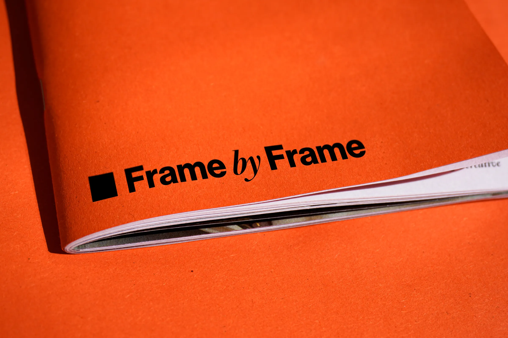
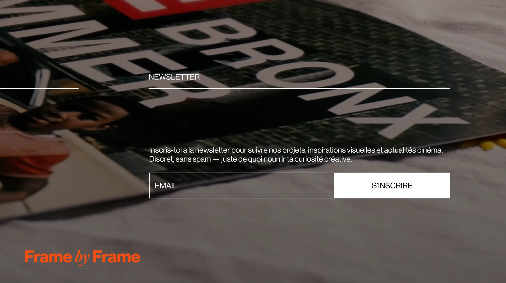
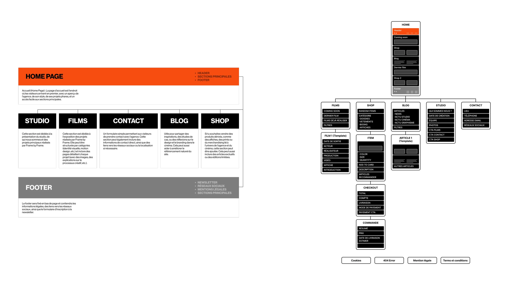
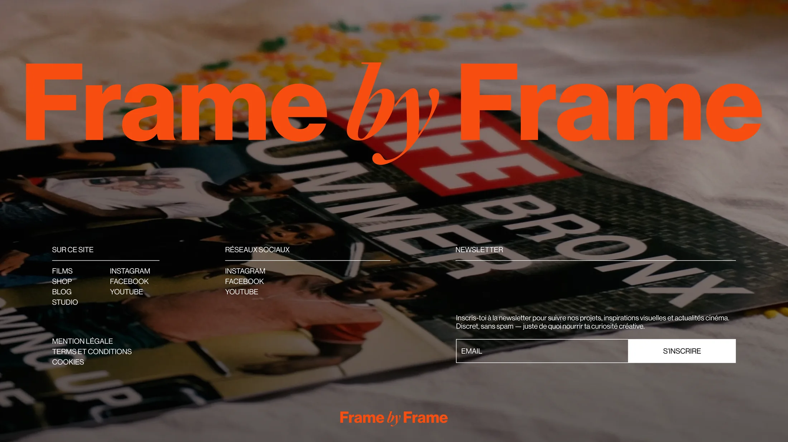

Un site vitrine pour une agence de branding cinéma, conçu pour plonger le visiteur dans un univers visuel fort. Il présente les services, le style créatif et les réalisations de l'agence, tout en facilitant la prise de contact.

Contexte et enjeux du branding cinéma
Frame by Frame est une agence créative spécialisée dans le branding pour le cinéma. L'enjeu : montrer ses services, sa direction artistique et ses réalisations de manière claire, sensible et percutante.

Architecture du site
Trois pages portent l'essentiel du site ; les fonctionnalités secondaires restent accessibles sans concurrencer l'univers visuel.
- 01Accueil
- 02Film
- 03Contact
- 04Newsletter
- 05Blog
- 06Shop


Interface mobile
Sur mobile, la hiérarchie est condensée pour conserver l'impact visuel tout en facilitant les interactions : navigation, repérage rapide et prise de contact.